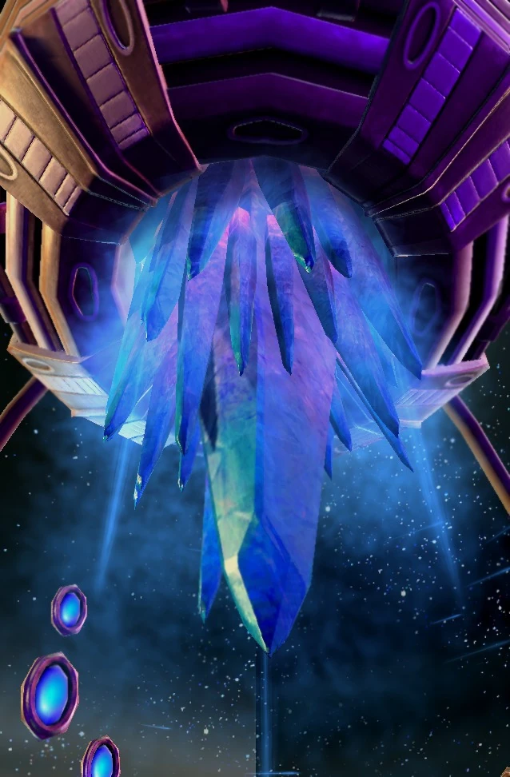

Материнский корабль
| Материнский корабль | |
|  | |
| Информация о юните | |
| Тип: | Большая возудшная единица |
| Описание: | Абсолютный корабль протоссов. Может использовать "Массовый вызов" и "Искривление времени". Скрывает ближайшие юниты и строения. |
| Построен из: | Нексус |
| Требуется: | Маяк флотилии |
| Стоимость: |  400 400  400 400  114 114  8 8 |
| Горячие клавиши: | M |
| Атака: Луч очистителя | |
| Цели: | Наземные/Воздушные |
| Урон | 6(+1)(х6) |
| DPS: | 22.8(+3.78) |
| Перезарядка: | 1.58 |
| Радиус атаки: | 7 |
| Статистика юнита | |
| Защита: |  350 350  350 350  2 (+1) 2 (+1) |
| Атрибуты: | Бронированный Массивный Механический Псионик |
| Энергия: | 50/200 |
| Радиус обзора: | 14 |
| Скорость: | 2.62 |
| Слаб против: | Викинг Губитель Излучатель пустоты |
Обзор
Материнские корабли — могучие вспомогательные корабли протоссов и одни из самых мощных боевых кораблей в арсенале протоссов. Они служили флагманами Золотой Армады.
Дизайн
Производство материнских кораблей требует больших затрат и времени. В результате протоссы начали строить их в два этапа, первым из которых является ядро корабля-базы. Само ядро можно использовать как защитное и вспомогательное оружие. Его корпус, состоящий из трех медленно вращающихся крыльев, образует плотно сплетенный энергетический купол, который создает в пределах корабля поддерживающую жизнь атмосферу и превращает вредное излучение дальнего космоса в избыточную энергию для плазменных щитов и первичных систем. Обшивка корпуса корабля необычайно толстая, и ее точная устойчивость ученым Доминиона неизвестна.
В ядре материнского корабля есть аналогичный барьер, единственная функция которого - защищать команду на остальной части корабля от мощной энергии, которую он генерирует.
Один член экипажа может управлять кораблем для простых варпов. Более сложные операции требуют экипажа. Эти корабли рассчитаны на резервирование, и повреждение одного крыла не нарушит работу их боевых систем. Промежутки между крыльями не мешают передвижению персонала, так как телепорты ближнего действия быстро перемещают его членов экипажа из точки в точку.
Материнские корабли значительно превышают размер любого военного корабля Терранского Доминиона, хотя их размер все еще превосходит левиафан зергов.
Материнские корабли Ихан-рии были украшены рунами, объявляющими их орден единственными истинными потомками зел-нага.
Талдаримы также используют материнские корабли. Материнские корабли Флота Смерти оборудованы для господства на поле боя. Каждый из них — трон, с которого талдаримский владыка наблюдает за уничтожением своих врагов.
Возможности
В основе каждого материнского корабля находится огромный кристалл кайдарина, наполненный невероятным количеством псионической энергии, которая быстро рассеивается после разряда в промежутках между крыльями корабля. Используя эту энергию, материнский корабль может исказить или расколоть саму ткань пространства-времени. Как только корабль-база становится полностью работоспособным, эта рассеиваемая энергия поглощается крыльями и проецируется в виде маскирующего поля, покрывающего большую площадь вокруг корабля. Сам корабль-база не получает выгоды от этого поля, но делает ближайшие силы, постройки и союзников протоссов невидимыми для невооруженного глаза. Массивы датчиков расположены на крыльях вместе с пилотируемыми наблюдательными пунктами для наблюдения на большом расстоянии. Материнские корабли используют инерционные нейтрализаторы для безопасного входа в планетарные атмосферы.
Один материнский корабль может переломить ход битвы. Для боя корабль оснащен лучом-очистителем, который является его основным средством защиты, стреляя управляемыми очередями по воздушным и наземным целям. Разрушительная мощь материнского корабля может в мгновение ока уничтожить эскадры вражеских кораблей или опустошить целые планеты. Другие аспекты интерьера корабля-носителя включают в себя комнату бодрствования для его командира, каюты экипажа и медицинский отсек. Также представлено несколько спасательных капсул.
История
Золотой век
Материнские корабли были спроектированы Джурасом и построены во время Золотого века экспансии протоссов как корабли для исследования дальнего космоса, ведущие армады кораблей протоссов в космос. Каста тамплиеров успешно подала прошение об изменениях; окончательный проект включал вооружение, и некоторые из них в конечном итоге были преобразованы в военные командные корабли.
В разгар Золотого века экспансии в кайдаринских кристаллических ядрах материнских кораблей было обнаружено несовершенство в способе сброса избыточной энергии материнского корабля между его крыльями во время маневрирования в условиях необычно высокой гравитации, в результате чего два из них вышли из строя в гравитационном колодце материнского корабля. нейтронная звезда, приведшая к гибели 8 463 протоссов; одна из самых больших потерь жизней в Золотом веке. В ответ на трагедию каста Халаи разработала два изобретения: технологию, позволяющую материнским кораблям массово отзываться вдали от опасности, предотвращая другую катастрофу, такую как инцидент с нейтронной звездой, и ковчег, массивный корабль, который можно было бы использовать для предотвращения подобной случайной трагедии. от того, что произошло и с Империей протоссов в целом.
Уцелевшие материнские корабли не были отозваны в конце Золотого века. Большинство из них остались на самых дальних рубежах исследований протоссов в виде титанических монументов и святынь, увековечивающих почтенный образ жизни и гордый период истории. Экипажи были помещены в стазис, хотя ожидалось, что корабли больше не понадобятся.
Материнский корабль верховного тамплиера Рихода оставался активным. Его команда помогала низкотехнологичным инопланетянам, пострадавшим в результате катастрофы.
Падение Айура
Нападение зергов на Айур во время Великой войны заставило переоценить ситуацию. Материнские корабли были отозваны на службу высшим тамплиером Эрекулом. Однако для кораблей было слишком поздно изменить ход войны.
Среди реактивированных кораблей был Моратун, первоначальный корабль-база, экипаж которого состоял исключительно из Джураса. Моратун спас фанатиков из осажденной колонии перед тем, как отправиться на Айур. Корабль и другие пустые базовые корабли прибыли в звездную систему Айура только после эвакуации Кхалаи на Шакурас. Корабли были вынуждены самостоятельно найти родной мир Темных Тамплиеров. Флот был укомплектован немногими выжившими, которых удалось найти. Корабль-база Рихода не был доставлен на Айур, опасаясь, что он может быть потерян в бою.
Материнские корабли воссоединились с протоссами во время Межвоенного периода и были захвачены кастой тамплиеров. После своего возвращения из глубокого космоса они стали важной частью военных действий протоссов и Золотой Армады.
Конец войны
Многие материнские корабли были потеряны из-за контроля Амона во время Конца Войны, и Дэлаамы были вынуждены вступить с ними в бой во время последнего штурма Айура. После активации Очистители начали строить свои собственные материнские корабли, чтобы подражать своим собратьям-храмовникам
По мере восстановления Айура возобновившийся культурный интерес к Золотому веку экспансии привел к новой волне поддержки и заботы о древних материнских кораблях.
Игровая единица
Материнский корабль — это ценная единица поддержки. Одновременно может быть развернут только один. Он часто появляется как «босс» в кампаниях StarCraft II.
Он ведет себя как Арбитр: скрывает и отзывает дружественные юниты, а также может временно вывести из строя юниты. Дальняя атака корабля позволяет ему использовать огневую мощь из-за фронта; он также может стрелять на ходу.
Материнский корабль подходит для сценариев поздней игры. Однако его использование в многопользовательской игре ограничивается его высокой стоимостью, положением в дереве технологий, уязвимостью к фокусировке, низкой мобильностью и относительно низким наносимым уроном.